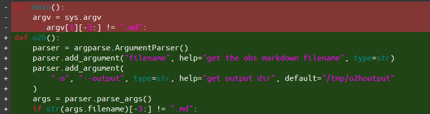

2201-布谷计划
好吧，从2022年开始，我计划将自己变成一个不咕的人。为了实行这个计划，我觉得还是有必要用自己的博客督促一下自己。那么我的博客重新更新开始，但是在更新之前，我发现我过去一年其实写了很多文章和报告。
不过……
Hexo的格式僵硬，我日常一般用更利于同步的obsidian和notion。为了更好的解决这个问题，我个人觉得使用一个翻译器比我手动改更好一些。
在编写之前，我个人预想了一些设计理念，最终选定了Python编写（主要是便捷）。但是我一般使用python只是作为脚本类小工具编写，这里我需要做一个好用一点的命令行工具，最好用pypi进行打包。那么我们开始。
Pypi
首先进行比较，我在使用pypi的setup.py前后，我对自己的程序需要进行什么改动？

简而言之，我自己对自己的程序进行了参数翻新。使得我们的程序可以进行更好的参数解析。如果使用 sys.argv 可能会有无法正确解析的问题，它更适合用来写小脚本，而不是功能复杂的命令行工具。argparse这里有一篇短文非常适合速成学习：
至于 setup.py 由于我是自用，所以我就快点搞搞得了，直接简单粗暴搞出来：1
2
3
4
5
6
7
8
9
10
11
12
13
setup(
name="o2h",
version="0.1.0",
author="Chivier Humber",
entry_points={
"console_scripts": ["obs2hexo=o2h.o2h:o2h"],
},
license="MIT",
keywords="translator",
packages=find_packages(),
)
复杂的功能并没有补充，这里介绍两项：
- entry_points： 用来制定命令行工具，格式为
[执行命令]=‘模块名’.'文件名':'函数名'。我的例子写的不好，可以参考 StackOverflow pypi。官方教程也有更完善的信息。 - packages： 使用自动检索功能即可
这样我就完成了一个翻译器的快速制作。